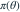
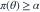
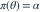
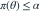

某检验的大小恰为  ，其功效函数为
，其功效函数为  ，应满足哪项？
，应满足哪项？
，其功效函数为 
。根据无偏检验的通常定义，对备择参数集合中的任意，应满足哪项？- A

- B

- C

- D
我已思考，展开答案与解析
正确答案：A
- 无偏检验要求在任何备择参数下，拒绝原假设的概率不低于在原假设下的最大拒绝概率。
- 检验大小为 时，这一条件写成 ，对所有备择参数成立。
易错提醒检验的无偏性与参数估计量的无偏性是两个不同概念。
原模拟卷 A · 模拟卷 A 第 44 题
原创